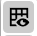
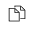

Planning in Whiteboard Editor¶
Planning in Whiteboard Editor allows the template planners to effectively plan how a publication should look like.
| Purpose: |
|
| Target Audience: |
|
| Prerequisites: |
|
| Overview: |
|
| Key Terms: |
|
Whiteboard Features¶
| Sr. No. | Icon | Name | Details |
|---|---|---|---|
| Zoom In | It is the Zoom in feature. It will make a screen appear much larger. | ||
| Zoom Out | It is the Zoom out feature. It will make a screen appear much smaller. | ||
| Set Default Zoom Level | It will set the default zoom level. | ||
|  | Hide Grid | This feature It is useful for hiding the grids from the document in a page preview. | |

|
Show Grid | This feature is useful for showing the grids in a document in page preview. | |

|
Hide Background | This feature will hide everything from the background in page preview. | |

|
Show Background | This feature will show everything in the background if anything is hidden. | |

|
Hide Tags | This feature will hide the tags in a page preview. | |
| Show Tags | This feature will show the tags in a page overview. | ||
| Merge Slots | This feature is used to merge more than one Slots in a document. You can select the Slots with the help of CTRL key and click on this icon to merge the selected Slots. | ||
| Split Slots | This feature is used to split the Workable Area into multiple Slots. So that products can be placed in a separate Slot. When you click on split Slot icon, a window will prompt where you need to enter the number of rows and columns in which you want to split the Workable Area. | ||

|
Exchange Slots | This feature is used to exchange the Slots. You need to select any two Slots that you want to exchange and click on this icon. | |
|  | Page Previews | This feature is used to display a document in a preview mode. You will be able to see a document in a preview mode before it gets ready for Adobe © InDesign ©. | |

|
Marketing Content | You need to first select any Slot where you want to place the article and then click on this icon. It will show the list of marketing articles that best fit in selected Slot. You can drag any article from the list and place into the selected Slot. | |
| Marketing Bundles | You need to first select any Slot where you want to place the marketing bundle and then click on this icon. It will show the list of marketing bundles that best fit in selected Slot. You can drag any bundle from the list and place into the selected Slot. | ||
| Product Templates | You need to first select any Slot. It will show you the list of product templates that best fit the selected Slot according to the Slot size. When you drag and drop any marketing article into a Slot, it will automatically fetch the product template as well based on the size of the selected Slot. | ||
| Tags | It will show you the list of tags. You can drag and drop any of the tags into a Slot. | ||
| Sync Status | This feature lets you know whether the planned products in product templates are present in a document or not. It shows whether the products are in the planning phase or it is ready for Adobe © InDesign © and print. It is the indication that designer has made the changes in a document from Adobe © InDesign ©. A planner will click on this icon to fetch the details that a designer has made in a document via Adobe © InDesign ©. | ||
| Refresh | It is a refresh feature. A planner will plan and save the document template details in Whiteboard. A Designer will accept the changes in Adobe © InDesign © made by a planner. If a designer makes any changes in a document template in Adobe © InDesign © and uploads it after he accepts the changes from a planner, then this refresh icon will blink in Whiteboard. | ||
| Accept Changes | The planner will select the changes made by a designer and click on this icon to accept the changes. | ||

|
Delete | The planner will select the changes made by a designer and click on this icon to reject or delete the changes. | |
| Select All | The planner will select all the changes made by a designer by clicking on this icon. The planner can either accept or delete all the changes made by a designer at a time with the help of this feature. |
How-to: Plan Products in Whiteboard¶
- From the publication content open view, click on the Open icon to open a publication in Whiteboard.
- When we open a publication in Whiteboard, all the documents which are part of this publication will be listed in the navigation reel at the top of the screen. You can render all the documents one by one by clicking on it and plan it via Whiteboard. It is possible that some of the documents have already been planned while planning the document template via Whiteboard. You can plan the remaining documents which are not yet planned. Whatever changes you make in the document template parallel in the background that is used in the publication, will also be reflected in this publication automatically until you click the Ready for InDesign button for a document.
- Click on the document which is not planned yet from the top navigation reel and start planning it.
- View and select the Workable Area in a document template.
- Click on the Split Slots icon to split the Workable Area into Slots.
- In the prompt that appears, provide the Number of Rows and Number of Columns then click on the Split button.
- The Workable Area is now divided into Slots.
- Select any Slot and assign the tags to it. Click on the Tags icon found in the left vertical toolbar to view the list of tags.
- All the tags that you select will be assigned to a Slot. You will be able to see the selected tags on the top of a Slot.
- Click on the Marketing Articles icon found in the left vertical toolbar to view the list of marketing articles.
- From the list, drag and drop any article to the desired Slot. The product template is selected automatically based on the Slot size.
- Drag and drop the marketing articles in each of the Slot based on how you want your document template to look like.
- You can right-click any of the Slots and click on the Get Info button.
- On the pop-up window that appears, view the details of a marketing article that you use in a selected Slot.
- Click on the Save button to save the planning of a document.
- Once you make all the changes in a document, click on the Ready for InDesign button for a document. Now you will see the created publication in Adobe © InDesign ©. Let’s say you have a total of four documents in this publication and you clicked the Ready for InDesign button only for the first document, then you will be able to access only the first document of the publication in Adobe © InDesign ©. The designer will be able to see the created publication and access the document which is ready for InDesign. The designer can sync these changes in DTP using Adobe InDesign. When he accepts the changes or planning from the Sync Status list in InDesign, then actual products will be placed in the InDesign document. Planning and Placement become in sync this way. Planner and Designer can work in parallel in Whiteboard and Adobe InDesign respectively.
- When a document is open at both in Whiteboard and in Adobe InDesign as well, and a designer makes any modification in a document after accepting the changes that the planner has made in a document via Whiteboard, then there will be a notification in the Whiteboard side. The planner will see a blinking Refresh icon in Whiteboard.
- The planner can accept all the changes made by the designer. In this case, the planner will select the changes and click on Accept Changes icon.
- The planner can also delete the changes made by the designer. In this case, the planner will select the changes and click on the Delete icon.
- Save the changes by clicking on the Save button.